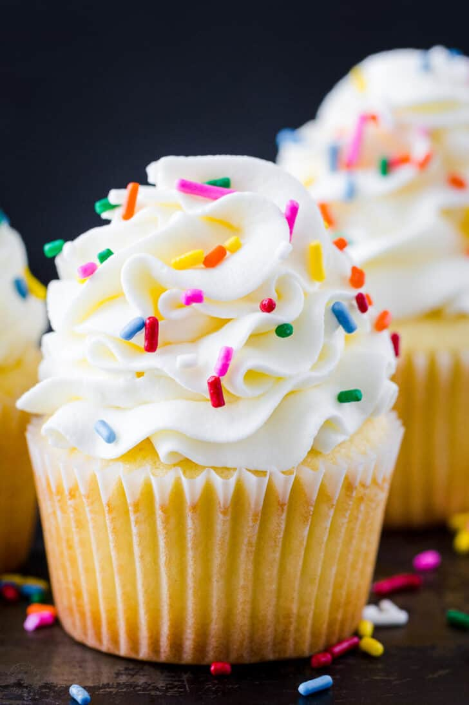

CubCake

Description
a small cake baked in a cup-shaped container and typically iced.
Ingredients
- 120g butter, softened
- 120g caster sugar
- 2 egg
- 1 tsp vanilla extract
- 120g self-raising flour
- 140g butter, softened
- 275g icing sugar
- 1-2 tbsp milk
- A few drops of food colouring (optional)
Steps
- Heat oven to 180C/160C fan/gas 4 and line a 12-hole muffin tin with paper cases.
- Cream the butter and sugar together in a bowl until pale. Beat the eggs in a separate bowl and mix into the butter mixture along with the vanilla extract.
- Fold in the flour, adding a little milk until the mixture is of a dropping consistency. Spoon the mixture into the paper cases until they are three quarters full.
- Bake in the oven for 10-15 minutes, or until golden-brown on top and a skewer inserted into one of the cakes comes out clean. Set aside to cool for 5-10 minutes. Then place on a wire rack.
- For the buttercream icing, beat the butter until soft. Add half the icing sugar and beat until smooth.
- Add the remaining icing sugar with 1 tbsp milk, adding more milk if necessary, until the mixture is smooth and creamy. Add food colouring (optional) and mix well.
- Spoon the buttercream into a piping bag and add a nozzle of your choice. Pipe in a swirl motion and then enjoy!